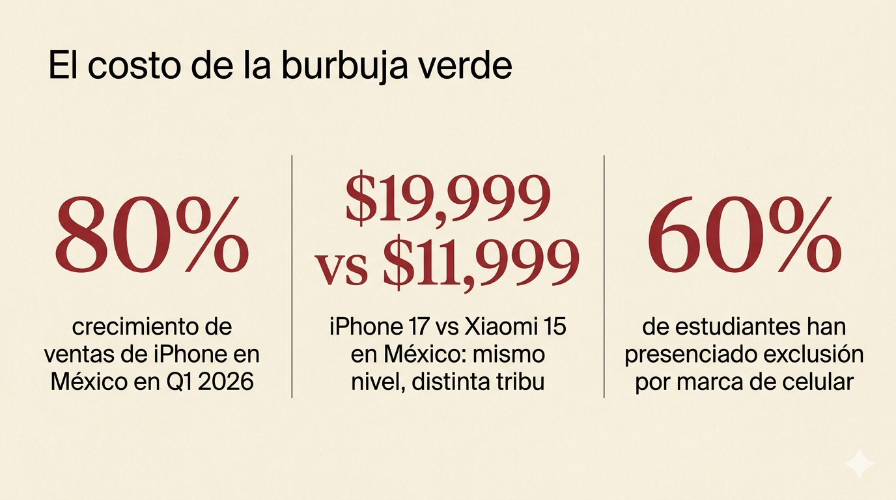
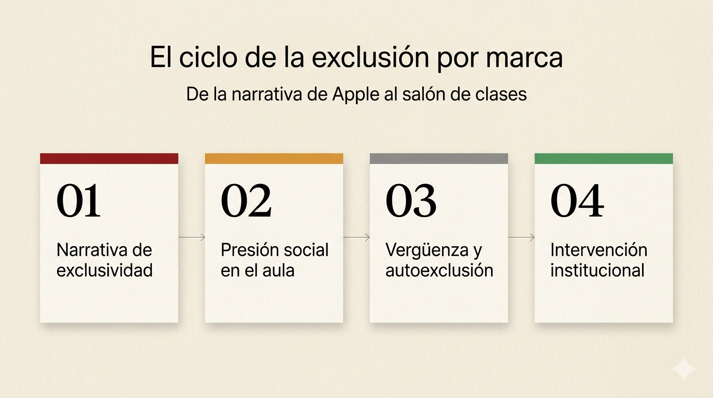

El poder de las narrativas de marca y las historias de los consumidores.
Dos identidades opuestas: Apple, la favorita; Xiaomi, la desconocida.
Empresa de tecnología fundada en 1976. Reconocida por su diseño, ecosistema integrado y narrativa premium.
Empresa china fundada en 2010. Se posiciona como democratizadora de la tecnología con precios accesibles.
Apple construye su marca sobre estos pilares:
Xiaomi posiciona su marca con:
Las historias frente a la realidad. ¿Dónde se alinean y dónde se quiebran?
| Narrativa | Realidad | Alineación |
|---|---|---|
| Hardware premium | Universalmente elogiado | Alta |
| Innovación constante | Reconocida pero con tropiezos | Parcial |
| Experiencia en tienda | 85% reseñas negativas sobre servicio | Baja |
| “Just works” | macOS 2026: 2.7/5 en calidad | Baja |
| Ecosistema empoderador | Percibido como “jaula dorada” | Dividida |
Los reseñas de Apple revelan una paradoja: en encuestas estructuradas (J.D. Power, NPS) la satisfacción es altísima, pero en plataformas abiertas (Trustpilot, ConsumerAffairs) predominan las quejas.
La narrativa de hardware premium y diseño sí se alinea con la experiencia real. Donde la historia se quiebra es en el servicio post-venta y la promesa de “el cliente primero”. Los consumidores que aman Apple lo hacen por los mismos motivos que la marca promociona: creatividad, diseño, ecosistema. Los que la critican señalan la desconexión entre la promesa de cuidado y la frialdad del soporte real.
Esto refuerza nuestra preferencia, pero con matices: admiramos la excelencia en producto y narrativa, reconociendo que su debilidad está donde la marca deja de contar historias y empieza a prestar servicio.
Antes de investigar, percibíamos a Xiaomi como “la alternativa china barata”. Después de leer reseñas y analizar su narrativa, nuestra percepción cambió: es una empresa ambiciosa en plena transición de marca económica a ecosistema premium (vehículo eléctrico SU7, colaboración con Leica).
El problema: su historia no ha alcanzado a su producto. Los consumidores reconocen el valor pero no sienten conexión emocional. Xiaomi habla de “innovación para todos” pero sus reseñas muestran que cuando algo falla, el cliente queda solo.
Historias que conectarían mejor: testimoniales reales de cómo su tecnología accesible cambió la vida de alguien concreto; narrativas de su servicio post-venta mejorando (transparencia sobre fallos y soluciones); mostrar la comunidad de Mi Fans como protagonistas, no como público.
Su storytelling es tan fuerte que sobrevive a reseñas negativos. La tribu ya está convencida; los detractores son percibidos como excepciones. La narrativa actúa como escudo reputacional.
Sin una narrativa emocional fuerte, cada reseña negativa pesa más. No hay “tribu” que defienda la marca. La ausencia de storytelling deja la reputación vulnerable al ruido.
Una historia sobre el aislamiento social en ciudades tecnológicas.
En las ciudades donde se construye el futuro digital, miles de ingenieros, diseñadores y analistas viven una ironía silenciosa: están hiperconectados al mundo y profundamente desconectados de quienes los rodean. Seattle, San Francisco, Austin, las capitales de la innovación, tienen tasas de soledad entre adultos jóvenes que superan el 60% según estudios recientes.
La problemática no es tecnológica; es humana. Es la persona que lleva seis meses en una ciudad nueva y su única interacción fuera del trabajo es con el repartidor de comida.
El aislamiento social no es solo tristeza: la Organización Mundial de la Salud lo declaró una “amenaza urgente de salud pública” en 2023. Sus efectos son equivalentes a fumar 15 cigarrillos diarios. Afecta la productividad laboral, aumenta la rotación de personal, y en casos extremos, contribuye a crisis de salud mental.
Nos afecta a todos los que migramos por oportunidades laborales. Deberían involucrarse las empresas (que traen a personas a estas ciudades), los urbanistas (que diseñan espacios), y las comunidades locales (que pueden integrar a los recién llegados).
Marco llegó a Seattle en enero. Su empresa pagaba bien, el departamento era nuevo, la vista del lago Union era impresionante. Los primeros meses fueron emocionantes: todo era descubrimiento. Pero en abril, la novedad se agotó.
Las llamadas con su equipo eran por Teams. El almuerzo era en su escritorio. Los vecinos del edificio desaparecían en sus departamentos a las 6pm. Intentó aplicaciones para conocer gente; tres cenas incómodas con desconocidos que nunca volvió a ver.
Un viernes a las 11pm, mandó un mensaje al grupo de Slack de su equipo: “¿Alguien para una cerveza?”. Lo leyeron. Nadie contestó. No por maldad; estaban ocupados con sus propias vidas fragmentadas.
Lo que rompió el ciclo de Marco no fue una aplicación ni una política corporativa. Fue un acto minúsculo: un compañero notó que siempre almorzaba solo y un día, sin preguntar, se sentó a su lado con su bandeja. “Qué, ¿te mudaste hace poco, verdad?”
De ahí salió un grupo de corredores de los sábados. Cuatro personas al principio, doce ahora. Ninguno es su mejor amigo de la infancia, pero todos entienden lo que se siente llegar a una ciudad donde nadie te conoce.
La soledad en las ciudades tech no se resuelve con tecnología. Se resuelve con algo que la tecnología no puede escalar: presencia. El gesto deliberado de sentarse al lado de alguien y preguntar cómo está. No hay algoritmo para eso, y quizá eso es exactamente lo que lo hace valioso.
Dos piezas gráficas diseñadas para complementar la historia.


Las historias no son decoración: son infraestructura de reputación.
Esta investigación revela un patrón claro: las historias no son decoración para marcas; son infraestructura de reputación. Apple sobrevive reseñas devastadores porque ha invertido décadas en construir una narrativa tan sólida que funciona como escudo. Xiaomi, con un producto competitivo, queda expuesta a cada crítica porque no ha construido ese capital narrativo.
Los comentarios de consumidores que realmente influyen comparten una estructura: son específicos (nombres, fechas, situaciones concretas), son emocionales sin ser histriónicos, y conectan la experiencia individual con algo universal. Una reseña que dice “el teléfono es malo” no mueve a nadie; uno que dice “mi madre intentó videollamarme desde el hospital y la pantalla se congeló” cambia decisiones de compra.
Las historias de marca y las historias de consumidores operan en la misma frecuencia emocional: ambas traducen hechos en significado. La diferencia es que las marcas controlan su narrativa mientras que los consumidores la verifican o la desmienten con experiencia vivida.
Las decisiones de compra, de lealtad, e incluso de identidad personal se construyen sobre estas narrativas. No elegimos productos; elegimos las historias que queremos contar sobre nosotros mismos. Apple lo entiende y lo monetiza. Xiaomi aún está aprendiendo que el mejor precio del mercado no basta si no hay una historia que le dé significado a la compra.
La lección para cualquier comunicador: los datos informan, pero las historias transforman. Y las historias más poderosas no son las que cuenta la marca, sino las que los consumidores eligen repetir.
Fuentes consultadas en formato APA.
ConsumerAffairs. (2026). Apple Store reseñas. https://www.consumeraffairs.com/computers/apple-store.html
Gottschall, J. (2013). The storytelling animal: How stories make us human. Mariner Books.
Heath, C., y Heath, D. (2007). Made to stick: Why some ideas survive and others die. Random House.
Jia, W. (2026, febrero). How Xiaomi is winning the European smartphone market. Forbes. https://www.forbes.com/sites/ewanspence/2026/02/16/how-xiaomi-is-winning-european-smartphone-market/
Retently. (2024). Apple's customer loyalty and high NPS. Retently Blog. https://www.retently.com/blog/apple-nps/
Salva, D. (2025, diciembre). Beyond the byte: A deep dive into Apple's masterful storytelling. Dan Salva.
SiteJabber. (2026). Apple reseñas. https://www.sitejabber.com/reseñas/apple.com
SiteJabber. (2026). Xiaomi reseñas. https://www.sitejabber.com/reseñas/mi.com
Six Colors. (2026, febrero). Apple Report Card 2026. Six Colors. https://sixcolors.com/post/2026/02/apple-report-card-2026/
TEDx Talks. (2017, 16 de marzo). The magical science of storytelling | David JP Phillips | TEDxStockholm [Video]. YouTube. https://www.youtube.com/watch?v=Nj-hdQMa3uA
World Health Organization. (2023). Social isolation and loneliness. WHO Commission on Social Connection.
Xiaomi. (2026). ET BrandEquity: Xiaomi bets on trust, local roots and an ecosystem future. Economic Times. https://brandequity.economictimes.indiatimes.com/